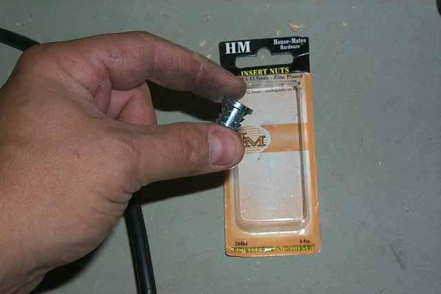
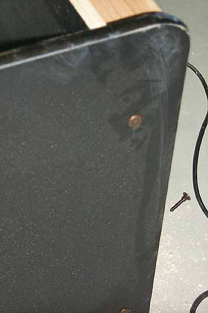

This is the insert nut, its
got some narly little teeth on it so it'll stay put. Since
the hole is 3/4" deep, you wont be able to just hammer it into place, so
I suggest taking one of the HM bolts that you picked up (You did pick up
a pack along with the insert nuts right?) and screw it into the insert
nut a few turns. Dab a small bit of glue around the teeth area
(Am I glue happy or what? It'll permanent set this into
place as the wood may dry later on and the nut may become loose so this
helps keep it snug for years to come) and using a hammer, tap it into place,
unscrew the bolt and line up the side panel and screw the bolts into place
until you have a snug fit, repeat the drilling, counter-sinking and insert
nut placement on the other end of the bottom of the side panel, then do
the other side panel. Now we're getting some place.

Blurry
picture, sorry.... the only bolts I saw where either chrome
or copper. I went with copper and later on I'll spray the heads
black to better blend with the side panels. If you like the chrome
as is, thats good, but remember your gonna have a few more in the center
of the side panel and again at the top, so by not painting them, the side
panels are gonna look weird.... paint them black.
Back to the control panel, lets trim the pedestal, mount it and get to
work on painting the whole thing and then we will be mounting into onto
the kiosk and back to Home Depot for some quickie "cheat materials" also
we'll need to shop around for some plexis glass while I'm there too!
:-)